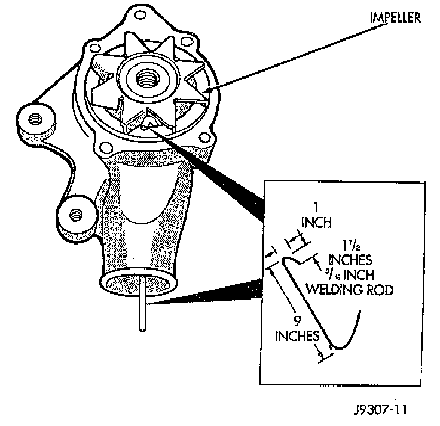

Water Pump: Testing and Inspection

NOTE: DO NOT WASTE reusable coolant. If solution is clean, drain coolant into a clean container for reuse.
WARNING: DO NOT REMOVE THE CYLINDER BLOCK DRAIN PLUGS OR LOOSEN THE RADIATOR DRAINCOCK WITH THE SYSTEM HOT AND UNDER PRESSURE. SERIOUS BURNS FROM THE COOLANT CAN OCCUR.
LOOSE IMPELLER
1. Drain the cooling system.
2. Loosen the fan belt.
3. Disconnect the lower radiator hose from the water pump.
4. Bend a stiff welding rod or similar device as shown. To prevent breakage of rod, minimum thickness should be 3/16 inch (0.187 inches).
5. Position the rod in the water pump inlet and attempt to hold the impeller while turning the fan pulley. If equipped with a thermal viscous fan drive, rotate the water pump shaft with a wrench attached to one of the fan pulley mounting nuts. If the impeller is loose and can be held with the rod while the fan blades are turning, the pump is defective. Do not use excessive force when rotating pump shaft. If the impeller turns, the pump is OK.
6. Connect the hose and install the coolant, or proceed with repairs.
NOTE: Inadequate heater performance may be caused by a metal casting restriction in the water pump heater hose inlet.
INSPECTING FOR INLET RESTRICTIONS
1. Drain sufficient coolant from the radiator to decrease the level below the water pump heater hose inlet.
2. Remove the heater hose.
3. Inspect the inlet for metal casting flash or other restrictions.
CAUTION: Remove the pump from the engine before removing restriction to prevent contamination of the coolant with debris.
REPLACE WATER PUMP ASSEMBLY IF IT HAS ANY OF THE FOLLOWING CONDITIONS:
^ The body is cracked or damaged
^ Water leaks from shaft seal. This is evident by traces of coolant below vent hole
^ Loose or rough turning bearing. Also inspect viscous fan drive
^ Impeller rubs either the pump body or timing chain case/cover